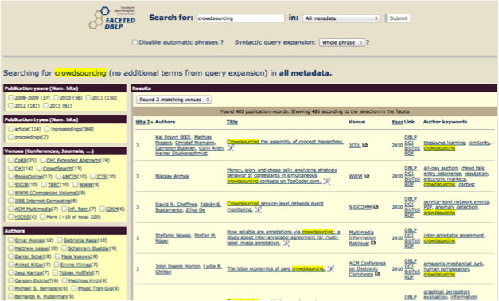

A well-known example of faceted search is FacetedDBLP [25], an interface for browsing DBLP [26], a bibliography of computer science publications. Facetted browsing is generally initiated by a keyword search to identify a region of interest. The returned results (i.e. publication records) can then be filtered using facets to restrict the results in terms of publication year, publication types, venue and authors. The publication records queried via FacetedDBLP are stored in a MySQL database. An RDB2RDF server is used to provide a SPARQL interface to the dataset (see section 3.9.2 of chapter 3 for a description of how to map a relational database to RDF).

Figure 48: FacetedDBLP.